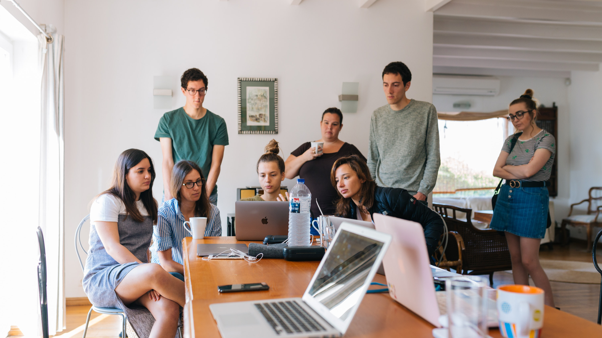
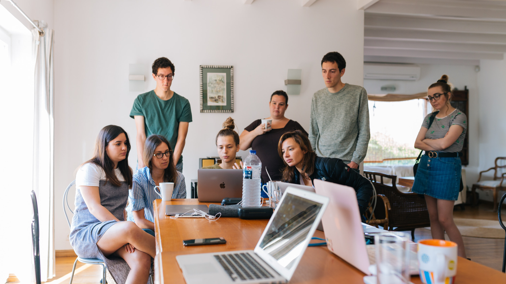

Samværs- og aktivitetstilbud
Vi kan sammensætte forløb på dags- eller ugebasis. Kontakt Solveij Steen for yderligere oplysninger.

 

Vi kan sammensætte forløb på dags- eller ugebasis. Kontakt Solveij Steen for yderligere oplysninger.
At få stillet diagnosen autismespektrumsforstyrrelse kan være uoverskueligt for både den berørte borger, såvel som for de pårørende.
"Når diagnosen er ny" giver en kort præsentation af autismespektrums- forstyrrelse som diagnose, samt rådgivning til det videre forløb.
Når man har et barn med autismespektrumsforstyrrelse og lignende, eller på anden vis er pårørende, kan man have behov for kvalificeret vejledning.
Telefonrådgivningen ligger tirsdag mellem kl. 13 og 15 på tlf. 44 98 23 55. For spørgsmål af pædagogisk/psykologisk art er telefonerne åbne kl. 13.00 - 14.00. For spørgsmål omhandlende socialfaglige og juridiske spørgsmål vedrørende børn og unge under 18 år og for voksne over 18 år, er telefonerne åbne kl. 14.00 - 15.00. Læs mere her.